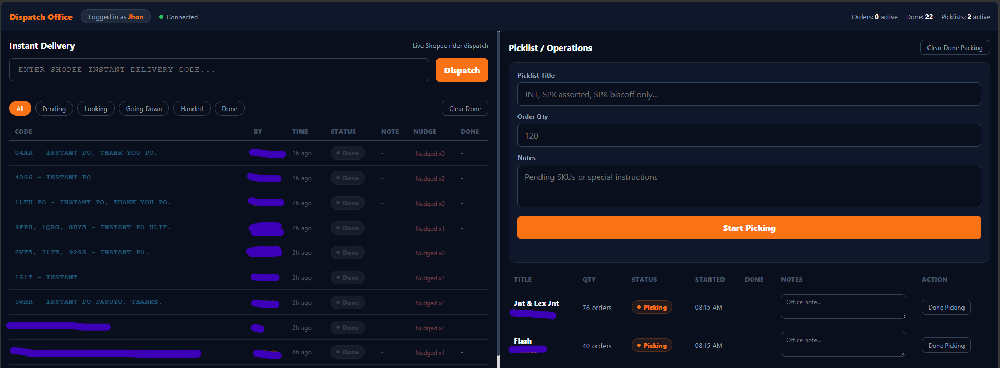
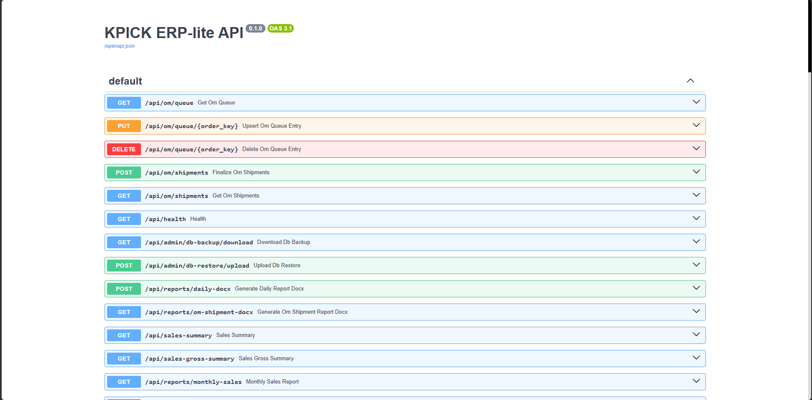

In every workplace I've been in, there's a system that technically exists — and a separate, informal process people actually use. The workaround is the workflow.
I study the gap between how a process is designed and how people actually move through it. Then I redesign the system around real behavior — not org-chart assumptions.
At Kpick Trading, I redesigned inventory workflows that employees were actively avoiding. The new version got adopted. Some people actually prefer it now.
About Me
I'm a Systems & Automation Engineer at K-Pick Trading Corp, a Korean medical supplies distributor operating across the Philippines. My job is to build the systems the business runs on — not as a side project, but as the primary infrastructure their teams use every day.
I've built a real-time dispatch system (Node.js + Socket.IO) that coordinates Shopee Instant Delivery orders across office and packing staff. A PostgreSQL-backed ERP prototype (FastAPI + Docker) that replaces Excel-based inventory tracking with a proper stock movement ledger and multi-platform order import. A Telegram bot (Python + Ollama + Google Sheets API) that lets staff query live inventory in plain English using a locally-hosted LLM. And the company's public website for their exclusive Korean medical brands.
The tools change by project — Excel VBA, SQL, Python, Node.js, FastAPI — but the goal is always the same: understand how the operation actually works, find where it breaks down, and build something the team adopts without being told to.
What I Work With
Work Experience
Kpick Trading Corporation — Korean medical supplies distributor, Philippines
- Built and deployed the Shopee Dispatch Display System: a real-time Node.js + Socket.IO web app that coordinates Shopee Instant Delivery orders across office and packing staff, with audio alerts, 5-stage status tracking, nudge system for urgent orders, and JSON persistence through server restarts
- Built the Kpick ERP-lite: PostgreSQL + FastAPI inventory backend with product master, BOX/PC unit conversion, stock movement ledger, multi-platform order import (Shopee, Lazada, TikTok), and duplicate order detection across 3-day windows
- Built the Kpick Telegram Inventory Bot: Python bot connecting Telegram, Google Sheets, and a locally-hosted LLM (Ollama/Qwen 2.5 on Mac Mini) for plain-English staff inventory queries with safe AI architecture
- Built kpicktradingcorp.com: company website for three exclusive Korean medical brands (Sungshim, EROP, Hansol), including product pages and a quote/PO request system
- Redesigned inventory transaction workflows previously avoided by staff — resulting in full team adoption
Optimal Systems Distribution
- Operated and monitored multifunction printing systems for high-volume document production and office support workflows
- Observed how small inefficiencies compound at scale; developed sharper instinct for operational bottlenecks
- Organized files, print requests, and production records while maintaining accuracy, confidentiality, and turnaround targets
- Coordinated with users and technical staff to resolve equipment issues and keep daily document operations running smoothly
Red Ribbon
- Worked in high-pressure, customer-facing operations — learned firsthand what breaks when systems are designed for the manager, not the worker
- Became the go-to person for technical questions and device troubleshooting among colleagues
- Strengthened operational awareness, multitasking, and team communication under real-world conditions
- Managed online orders, warehouse operations, and shipments
- Handled basic tech troubleshooting and built trust with the team as the informal IT resource
- Gained hands-on experience with logistics, inventory systems, and digital tools
- Provided technical support during the pandemic — facilitated online classes and managed e-documents
- First formal exposure to systems support; built skills in remote assistance, documentation, and problem-solving
- The unofficial IT person before it became an official role
- Managed daily operations in a busy school canteen
- Built time management, multitasking, and organizational skills that still inform how I approach operational work
City of Malabon University
Graduated with a strong foundation in both theoretical and practical aspects of IT. Gained hands-on experience through academic projects, collaborative development, and real-world simulations.
Core Skills Acquired:
What I Can Build
I identify manual workflows that slow your team down and build automated systems using Excel VBA, Python, or Access. The goal isn't just automation — it's building something your team will actually use.
Ordering systems, attendance trackers, inventory management, reporting dashboards — tools designed for the people who use them daily, not just the manager who requested them.
Not sure why your process keeps breaking down? I analyze your current workflow, identify where friction lives, and recommend what to fix — before writing a single line of code.
Remote and on-site support for software, hardware, and digital tools. I document what I fix and why — so the same issue doesn't come back.
Structured data entry, Excel-based reporting, SQL queries, and dashboards that give you accurate information without manual counting or spreadsheet archaeology.
Internal web tools, department websites, and lightweight web-based interfaces. When your operation needs to move beyond the spreadsheet, I can build the bridge.
My Work

Shopee Instant Delivery orders were tracked verbally or on paper. Staff had no shared view of which orders were urgent, who was handling what, or where each order stood in the packing process.
A real-time Node.js + Socket.IO web app running on a Mac Mini, serving two browser interfaces across the office LAN. Office staff dispatch rider codes and create picklists. The packing display shows large-format order cards with audio alerts — chimes on new orders, beeps on nudges, visual flash and RUSH banner for urgent ones. Five-stage status tracking. JSON persistence through server restarts. No internet required.
Office and packing staff now coordinate on one shared live view. Urgent orders are impossible to miss. The system is in daily use at K-Pick's operations — no more verbal relay, no more missed riders.

K-Pick's inventory lived in a 193MB Excel workbook. No audit trail on stock changes, no structured way to import orders from Shopee, Lazada, or TikTok, and no duplicate order detection — the same order could be processed twice without anyone knowing.
A PostgreSQL-backed ERP prototype with a FastAPI REST API and Docker Compose setup. Features: product master with parent/child SKUs, BOX-to-PC unit conversion, stock movement ledger (stock is never edited directly — all changes go through movements), multi-platform picklist import (Shopee, Lazada, TikTok), duplicate order detection across 3-day windows, learned platform-to-product mappings, and staff user accounts. Seeded from the live Excel workbook.
Foundation laid for replacing Excel-based inventory tracking with a proper database-backed system. API fully documented, dry-run import logic working across all three platforms, duplicate detection preventing double-processing of orders.
Staff couldn't quickly check inventory during sales calls or customer inquiries without opening a massive Excel file or asking someone at the office. The process created delays and friction in customer-facing conversations.
A Python Telegram bot connecting three systems: Telegram Bot API for staff interaction, Google Sheets as the live inventory source of truth, and a locally-hosted LLM (Qwen 2.5 via Ollama on a Mac Mini) for natural language parsing. The AI architecture is deliberately safe: Ollama receives only the user's question and returns an intent JSON — it never sees inventory data and cannot invent stock values. Python then queries Google Sheets with the parsed intent and formats the real result.
Any authorized staff member can ask "How many gloves do we have?" or run /lowstock 10 from anywhere via Telegram and get a real answer from live data — instantly, without opening a spreadsheet.

{kind=link}
{kind=link}
{kind=link}